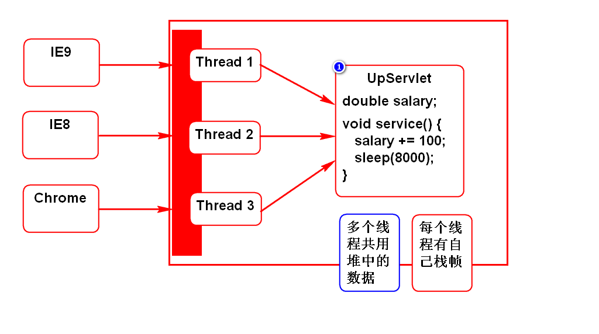
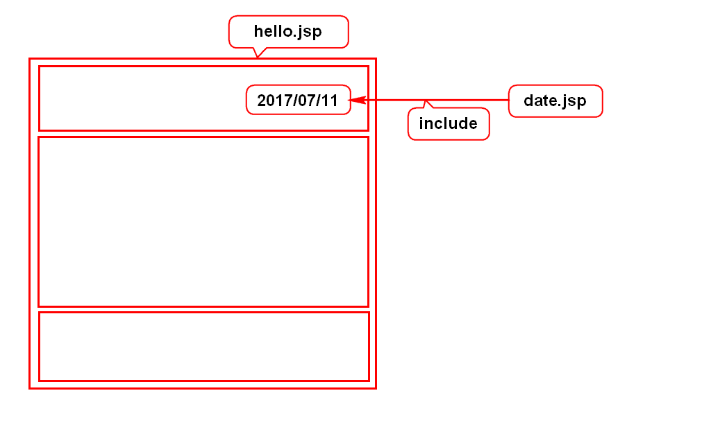
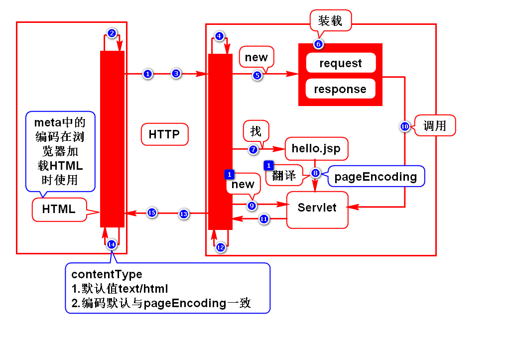

一.config和context的应用
1.config应用场景
假设要开发一个页游,要限制最大在线人数.
即:在登录功能LoginServlet中加以判断.
其中最大在线人数maxOnline要求可配置.
该参数只有LoginServlet自己用,所以用config读取即可.
2.context应用场景
软件内往往包含很多查询功能,一般都支持分页.
每页显示的行数(size)通常是要求可配的.
由于该参数是在多个功能间共用,所以用context读取.
3.context特殊用法
它不但可以读取常量,还可以读写变量,这些变量也是被共用的.
假设要开发一个统计网站流量的功能.
流量是变量,而且访问任何功能都要累加此变量,是要共用的.
适合采用context来读写.
二.Servlet线程安全问题
解决方案:加锁 
三.JSP
1.jsp的作用
它的作用与Servlet一样
它的书写方式要比Servlet简化
2.jsp的语法
jsp表达式
jsp脚本
jsp声明
3.指令
page
include 
4.jsp原理
jsp的本质就是Servlet 
5.翻译的过程
6.翻译的结果
四.jsp隐含对象(面试题)
1.request(*)
HttpServletRequest
2.response
HttpServletResponse
3.out
JSPWriter
4.config
ServletConfig
5.application
ServletContext
6.exception
Throwable
7.session(*)
HttpSession
8.page
Object
值为this,指代翻译所得的Servlet对象
9.pageContext(*)
PageContext
是一个管理者,可以管理其他8个对象
如何使用隐含对象?
在jsp上直接引用
<%String user = request.getParameter("user");%>
<%=request.getParameter("user")%>